The Documentation Generation system automatically creates comprehensive markdown documentation for agents, swarms, and system components within the agent-swarm-kit framework. This system transforms schema definitions into human-readable documentation with UML diagrams, performance metrics, and structured cross-references between components.
For information about performance monitoring data collection, see Performance Monitoring. For details about schema management and component registration, see Schema Services.
The documentation generation system centers around the DocService class, which orchestrates the creation of markdown files, UML diagrams, and performance dumps through a coordinated workflow involving multiple schema and validation services.

The documentation generation process follows a structured workflow that validates components, processes schemas, and generates output files with concurrent execution for performance optimization.

The documentation system generates a structured directory layout with markdown files, UML diagrams, and performance data organized for easy navigation and cross-referencing.
| Output Type | Location | Format | Purpose |
|---|---|---|---|
| Swarm Documentation | [dirName]/[swarmName].md |
Markdown | Swarm overview with agent lists and policies |
| Agent Documentation | [dirName]/agent/[agentName].md |
Markdown | Detailed agent configuration and tools |
| UML Diagrams | [dirName]/image/[type]_schema_[name].svg |
SVG | Visual schema representations |
| Performance Data | [dirName]/[timestamp].json |
JSON | System performance metrics |
| Client Performance | [dirName]/[clientId].[timestamp].json |
JSON | Client-specific metrics |
Each generated markdown file follows a consistent template structure with YAML frontmatter and organized sections:
---
title: [prefix]/[componentName]
group: [prefix]
---
# [Component Name]
> [Component Description]

## [Component-Specific Sections]
The documentation generation system leverages the framework's schema services to extract structured information about agents, swarms, and their relationships, creating comprehensive documentation that reflects the actual system configuration.

The system generates visual representations of agent and swarm schemas using PlantUML, providing developers with clear architectural diagrams that complement the textual documentation.

The system includes capabilities for documenting performance metrics alongside functional documentation, providing insights into system operation and client-specific performance characteristics.
| Method | Output | Content | Use Case |
|---|---|---|---|
dumpPerfomance() |
[momentStamp].[timeStamp].json |
System-wide performance records | System monitoring and optimization |
dumpClientPerfomance() |
[clientId].[momentStamp].json |
Client-specific performance data | Client session analysis |
The performance documentation captures detailed metrics through the PerfService:
perfService.toRecord()perfService.toClientRecord(clientId)getMomentStamp() and getTimeStamp() for chronological organizationThe documentation generation system provides both command-line and programmatic interfaces for integration into build processes and development workflows.
The dumpDocs CLI command provides a developer-friendly interface with validation and configuration options:
// CLI signature from dumpDocs.ts
dumpDocs(
prefix = "swarm",
dirName = "./docs/chat",
PlantUML?: (uml: string) => Promise<string>,
sanitizeMarkdown: (text: string) => string = (t) => t
)
The system includes automated build scripts for generating documentation across multiple demo projects:
These scripts iterate through demo directories, install dependencies, and execute npm run build:docs commands.
Documentation generation employs concurrent processing through thread pools to optimize performance when generating large numbers of documentation files.
| Configuration | Value | Purpose |
|---|---|---|
THREAD_POOL_SIZE |
5 | Maximum concurrent documentation workers |
THREAD_POOL_DELAY |
0 | Delay between thread pool executions |
execpool |
Function wrapper | Manages concurrent execution of writeSwarmDoc and writeAgentDoc |
The thread pool system ensures efficient resource utilization while preventing system overload during bulk documentation generation operations.